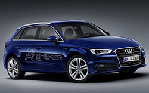
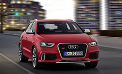
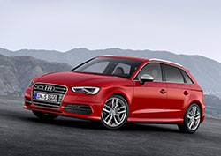

Geneva 2013: Audi A3 Sportback g-tron, primul vehicul propulsat de gaz metan sintetic |
|
|  |
Al doilea element important al lui Audi A3 Sportback g-tron este regulatorul electronic a presiunii gazului. Această componentă compactă şi uşoară reduce presiunea înaltă a gazului până la aproximativ 5-9 bari, în două stagii. Astfel, se asigură presiunea corectă în conductele de gaz şi la valvele injectoare – presiune scăzută pentru un condus eficient la viteze mici şi presiune mai înaltă când şoferul cere mai multă putere şi cuplu.
Dacă presiunea din rezervor scade sub 10 bari, sistemul de management al motorului automat schimbă alimentarea pe benzină. Astfel, Audi A3 Sportback g-tron este bivalent, iar cifrele de performanţă sunt identice în modul CNG şi în modul benzină.
Gazul natural oferă o autonomie de circa 400 km iar benzina asigură încă 900 km, astfel că autonomia totală (1300 km) rivalizează cu un Audi TDI pe motorină.
Motorul este bazat pe noul motor 1.4 TFSI, cu modificări la cilindri, sistemul turbo, injecţie şi convertorul catalitic. Dezvoltând 81 kW/110 CP şi 200 Nm, Audi A3 Sportback g-tron are o viteză maximă de 190 km/h şi poate accelera de la 0-100 km/h în 11 secunde. Modelul cu cinci uşi consumă în medie 3,5 kg de CNG sau Audi e-gas – carburant generat din eco-electricitate în proiectul Audi e-gas. Emisiile de CO2 sunt mai mici de 95 grame per km în modul de alimentare cu gaz.
Când Audi A3 Sportback g-tron este propulsat de Audi e-gas, nu mai sunt eliminate alte emisii CO2 decât cele care au fost utilizate la producţia sa, astfel că ciclul este închis. Când necesarul de energie necesar producerii de e-gas şi generatoarele eoliene sunt incluse în analiză, emisiile de CO2 tot sunt mai mici de 30 grame per km.
Cu proiectul e-gas, Audi este primul producător auto ce dezvoltă un întreg lanţ de producţie a energiei sustenabile. Acesta porneşte de la electricitatea produsă din surse regenerabile iar produsele finale sunt hidrogenul şi produsul sintetic Audi e-gas. Construcţia primei uzine industriale din lume, ce produce metan sintetic (e-gas) din CO2 şi electricitate regenerabilă, este aproape gata în Werlte (districtul Emsland din Saxonia de Jos), Germania. Aceasta va produce e-gas pentru 1.500 noi modele Audi A3 Sportback g-tron, cu o medie anuală de 15.000 km parcurşi.
Audi A3 Sportback g-tron, prezentat în premieră mondială la Salonul Auto de la Geneva (7-17 martie 2013), va ajunge pe piaţă până la sfârşitul acestui an.
Audi RS Q3, dezvăluit oficial înaintea debutului de la GenevaPublicat în data de: 20 Februarie 2013Categorii: Audi, Auto-show, Stiri, Geneva. |
|
|  |
Audi RS Q3 are un aspect mai agresiv, cu noi spoilere, praguri laterale revizuite şi o grilă a radiatorului în formă de fagure. Noul model beneficiază şi de un eleron montat pe acoperiş, difuzor integrat în spoilerul spate şi ţevi de eşapament în formă eliptică. De asemenea, noul Audi RS Q3 se remarcă printr-o gardă la sol mai redusă, cu 25 mm, frâne ultra-performante, cu etrieri în opt pistoane şi jante de 19 sau 20 inch.
Stilul sportiv este preluat şi de interior, unde clienţii vor fi întâmpinaţi de tapiţerie din piele/Alcantara, volan cu bază plată şi pedalier din aluminiu. La o privire mai atentă se remarcă şi sistemul infotainment MMi precum şi inserţiile de aluminiu şi fibră de carbon. Opţional, clienţii vor putea comanda un sistem de navigaţie prin GPS, hotspot WLAN şi sistem audio Bose cu 14 difuzoare.
Noul Audi RS Q3 are sub capotă un motor de 2.5 litri turbo cu cinci cilindri, ce dezvoltă 228 kW/310 CP şi 420 Nm. Acesta este cuplat la o transmisie S tronic şi la un sistem de tracţiune integrală permanentă quattro.
Astfel, crossoverul de 1.730 kg poate accelera de la 0-100 km/h în 5,5 secunde înainte să ajungă la viteza maximă, limitată electronic, de 250 km/h.
În materia de eficienţă, amintim că noul Audi RS Q3 consumă în medie 8,8 litri/100 km, echivalentul unor emisii de 206 g/km de CO2.
Audi RS Q3, după ce va fi prezentat în premieră mondială la Salonul Auto de la Geneva, deschis publicului între 7-17 martie 2013, va fi pus în vânzare la un preţ de pornire în Germania de 54.600 Euro.
Video: Audi RS Q3 Promo
Audi prezintă noul S3 Sportback ce va debuta oficial la Geneva |
|
|  |
Acest motor cu patru cilindri, ultra-performant, este cuplat la o transmisie manuală cu 6 trepte sau, opţional, una automată S tronic cu 6 viteze. În ultimul caz, Audi S3 Sportback accelerează de la 0-100 km/h în doar 5 secunde, iar viteza maximă este limitată electronic la 250 km/h.
În varianta cu transmisie manuală, noul Audi S3 Sportback consumă în medie doar 6,9 litri/100 km, iar cu transmisia S tronic, motorul turbo de 2.0 litri are nevoie în plus de 0,1 litri/100 km (consum 7.0 litri/100 km). Astfel, consumul noului motor este mai redus cu 1,5 litri decât la modelul anterior S3 Sportback.
Echipat cu tracţiune integrală quattro, noul model accelerează mai rapid şi poate lua curbele mai rapid şi mai în siguranţă. Este stabil dinamic în toate condiţiile meteo, indiferent că plouă sau ninge.
Noul Audi S3 Sportback îşi va celebra premiera mondială în cadrul Salonului Auto de la Geneva, deschis publicului între 7 şi 17 martie 2013, urmând ca livrările să înceapă din septembrie.